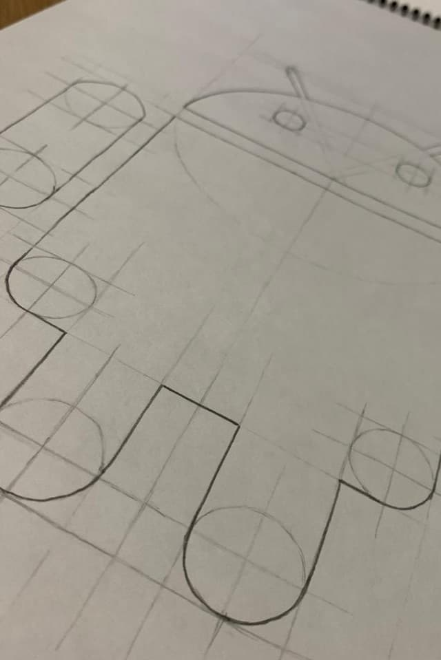
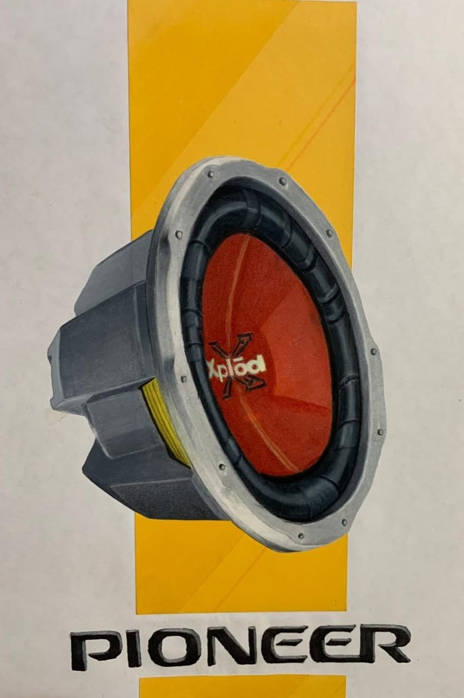
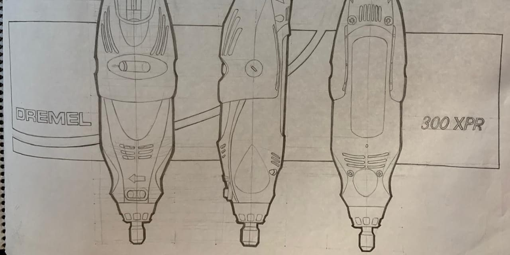

El Acto de Crear
Taller de dibujo para descubrir tu propio estilo




Mucho más que
clases de dibujo
Enseño tecnicas de representación para que cada niño desarrolle su estilo propio, aprenda a convivir con el error como parte del proceso y adquiera disciplina para avanzar más allá de su zona de confort.
No formo solo dibujantes; acompaño a personas a descubrir su capacidad de enfoque y resiliencia. Mi enfoque es lúdico, empático y personalizado, diseñado para transformar la curiosidad en una disciplina del bienestar.
Bienestar & Habilidades
A través de la práctica creativa, reforzamos habilidades blandas esenciales para el desarrollo académico y personal:
Bitácora de Trabajos


Exploración Tonal
Estudio de degradados y atención al detalle y exploración conceptual.

Marcador
El pulso seguro como ejercicio que refleja confianza.

Técnicas Mixtas
La perseverancia aplicada a un proceso, un compendio de aprendizajes en el tiempo.